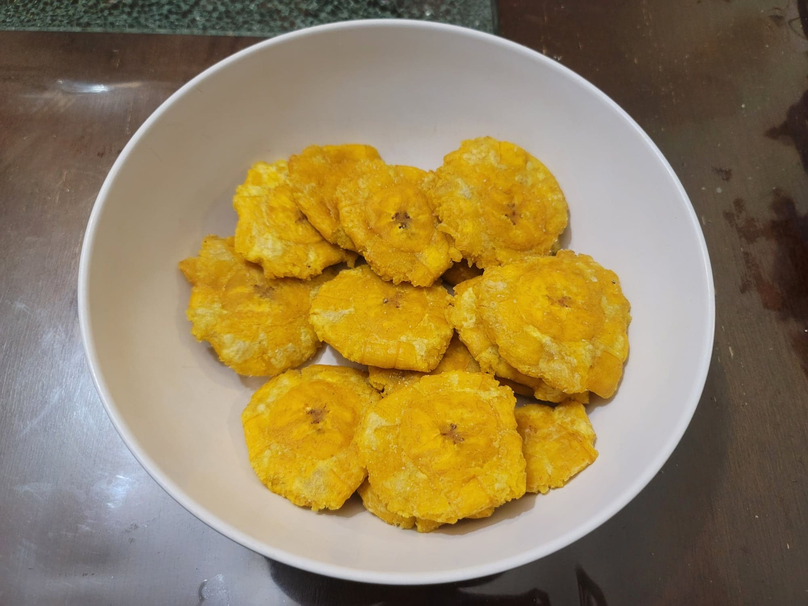

Tostones

Ingredients:
- 2 Green plantains, peeled, cut into 1" slices (about 8 pieces per plantain)
- 1/2 cup Canola oil, or as needed
- 1 tbsp Kosher salt, or to taste
Instructions:
- In a large saucepan, add enough oil to cover the plantain slices. Heat to 350 degrees Fahrenheit.
- Add in the sliced plantains. Let deep fry for about 5 minutes, or until the color becomes light golden. Then remove the plantains to a paper towel lined plate.
- Take a slice of plantain and flatten it with a tostonera or a large flat cup or pan. Flatten to about 1/4" or thinner. Repeat with the rest of the plantains.
- Then return the flattened plantains to the hot oil. Let deep fry for another 5 minutes, or until golden. Then remove to a paper towel lined plate before transferring to a serving bowl. Toss with salt to taste in the bowl. Serve immediately.